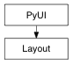

Given the name of a May UI control, return the corresponding QWidget. If the object does not exist, returns None
Note
Requires PySide
set this layout as the default parent
set the default parent to the parent of this layout
recursively yield all children of this layout